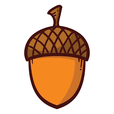

Squirrel Appreciation Day is observed annually on January 21. The creator, Christy Hargrove, is a wildlife rehabilitator in North Carolina and is affiliated with the Western North Carolina Nature Center. According to Christy, “Celebration of the event itself is up to the individual or group — anything from putting out extra food for the squirrels to learning something new about the species.”
According to the Integrated Taxonomic Information System of North America (ITIS), there are over 200 species of squirrels. Some of the oldest squirrels categorized on the list are the nocturnal arrow flying squirrel (validated in 1766) and the Black Giant (validated in 1778). Of all these species, they fall into three types. Ground squirrels, such as the thirteen-lined ground squirrel, the rock squirrel, California ground squirrel and many others blanket the prairies and deserts of North America. Often causing damage, they can be considered pests, and they are labeled rodents. Predators enjoy them as a tasty morsel, too. As a result, they work together to protect themselves. Their only protection is to flee! Tree squirrels make their homes in the trees but also find their nesting materials and food both on the ground and above. Making their homes in cities and the countryside in nations all around the globe, these familiar backyard and park residents will make themselves right at home in your birdfeeders or snag your snack right from your hands if they have become practiced enough! The third type of squirrel leaps farther than the others with flaps of skin between the legs. Flying squirrels glide greater distances giving the impression they can fly. When they leap from tree to tree or building to building, they spread their legs wide and float on the breeze escaping predators or perhaps other snarky tree squirrels with a nut to pick with them.
HOW TO OBSERVE Learn more about these fascinating creatures. Tell us your favorite squirrel story or share a picture of your squirrel visitors. Use #SquirrelAppreciationDay to post on social media.